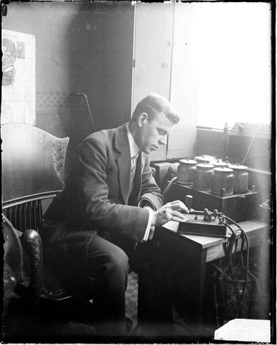

O mais interessante é que não era necessário transmitir uma letra inteira de uma única vez. Cada letra era formada por uma combinação específica de pontos e traços. Por exemplo, a letra A era representada por .-, enquanto a letra B era representada por -....
Mas como saber onde uma letra terminava e a próxima começava? O tempo também fazia parte da mensagem! Pequenas pausas separavam os pontos e traços de uma mesma letra, enquanto pausas maiores indicavam que uma letra havia terminado. Uma pausa ainda maior podia separar palavras inteiras.
Assim, a informação não estava apenas no fato de a eletricidade estar ligada ou desligada, mas principalmente na sequência e no tempo em que os sinais aconteciam. O receptor observava esses pulsos elétricos e os traduzia novamente para letras e palavras.
Essa ideia permitiu que mensagens viajassem por grandes distâncias através de fios elétricos. Um simples sistema de sinais: ligado, desligado, curto ou longo, era suficiente para transformar eletricidade em informação. O Código Morse foi, portanto, um dos primeiros exemplos de como máquinas poderiam usar sinais elétricos para representar, transmitir e interpretar dados.

Um homem com uma máquina de Morse